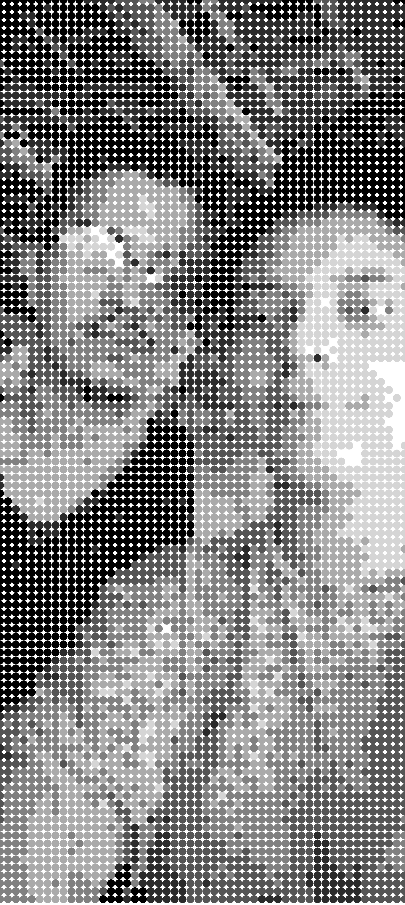

Releituras da obra "Derivadas de uma Imagem" de Waldemar Cordeiro
Acesse o link abaixo e carregue uma imagem, ajuste os círculos e veja a transformação da imagem. Salve sua releitura, caso queira que sua imagem apareça no site envie sua imagem gerada para o email releituraderivadas@gmail.com. Salve sua imagem com vários tamanhos de circulo diferentes, para conseguirmos ver como a imagem mudou.
ACONSELHO UTILIZAR O PROGRAMA EM UM COMPUTADOR, PARA UMA MELHOR EXPERIÊNCIA.
Galeria de Releituras
